X1354–X1392¶
Brisse Transforms, Rigby/Griffiths Points & Complementary Conjugates
X1354–X1392 (Brisse Transforms, Rigby/Griffiths Points & Complementary Conjugates) — 16 representative centers (from 39 in collection) constructed on acute reference triangle \((a, b, c) = (5, 6, 7)\) with unit baseline AB = \(1\).¶
Group Preamble — Brisse Transforms 1354-1367
Suppose that P is a point on the circumcircle Γ of triangle ABC. Let U and V be the lines through P tangent to the incircle. Line U meets Γ in a point U' other than P, and line V meets Γ in a point V' other than P. The line U'V' is tangent to the incircle. The touchpoint, denoted by T(P), is the Brisse transform of P. Suppose P is given by barycentrics \(u : v : w\). Barycentrics for T(P) are found in
Edward Brisse, Perspective Poristic Triangles: \(a^{4}\)/[(b + c - a)\(u^{2}\)] : \(b^{4}\)/[(c + a - b)\(v^{2}\)] : \(c^{4}\)/[(a + b - c)\(w^{2}\)].
If X is given by trilinears \(x : y : z\), then T(X) has trilinears a/[(b + c - a)\(x^{2}\)] : b/[(c + a - b)\(y^{2}\)] : c/[(a + b - c)\(z^{2}\)].
Still open is the question posed in Hyacinthos #6832: to list all polynomial centers on the incircle having low degree and to prove that there are no others. Here, “degree” of X =\(p(a,b,c) : p(b,c,a) : p(c,a,b)\) [barycentrics] refers to the degree of homogeneity of p(a,b,c), and “low” means less than 6. (The Feuerbach point, X11, has degree 3.)
In Hyacinthos #6835, Paul Yiu gives two methods for constructing polynomial centers on the incircle:
If X is a polynomial center on the incircle and W is any other polynomial center, then the line XW meets the incircle in another point that is a polynomial center.
If W is on the line at infinity, then the barycentric square \(W^{2}\) is on the Steiner inscribed ellipse, and the barycentric product X7*\(W^{2}\) is on the incircle.
X1354BRISSE TRANSFORM OF X74
X1355BRISSE TRANSFORM OF X98
X1355 lies on the incircle.
X1356BRISSE TRANSFORM OF X99
X1357BRISSE TRANSFORM OF X100
X1358BRISSE TRANSFORM OF X101
X1359BRISSE TRANSFORM OF X102
X1360BRISSE TRANSFORM OF X103
X1361BRISSE TRANSFORM OF X104
X1362BRISSE TRANSFORM OF X105
X1363BRISSE TRANSFORM OF X107
X1363 lies on the incircle.
X1364BRISSE TRANSFORM OF X108
X1365BRISSE TRANSFORM OF X110
X1366BRISSE TRANSFORM OF X111
X1366 lies on the incircle.
X1367BRISSE TRANSFORM OF X112
X1367 lies on the incircle.
X1368COMPLEMENTARY CONJUGATE OF X6
X1369ANTICOMPLEMENTARY CONJUGATE OF X6
X1370ANTICOMPLEMENT OF X25
X13711st RIGBY POINT
X13722nd RIGBY POINT
X13731st GRIFFITHS POINT
X13742nd GRIFFITHS POINT

X1375EVANS POINT
X1376EXSIMILICENTER(CIRCUMCIRCLE, SPIEKER CIRCLE)
X1377INSIMILICENTER(2nd LEMOINE CIRCLE, SPIEKER CIRCLE)
X1378EXSIMILICENTER(2nd LEMOINE CIRCLE, SPIEKER CIRCLE)
